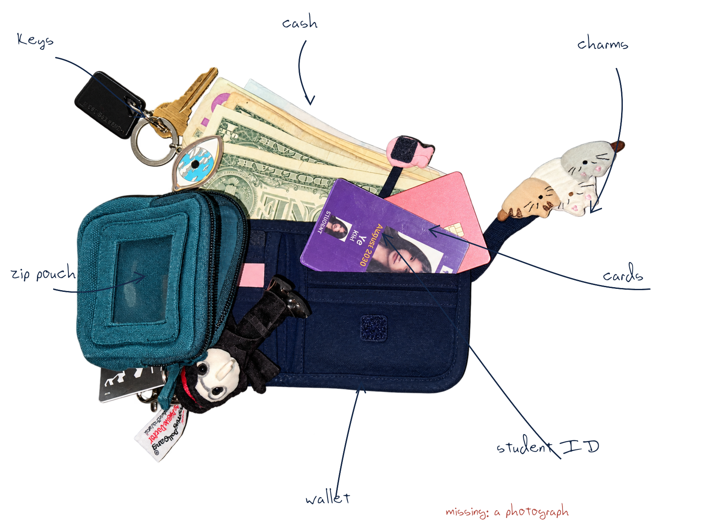
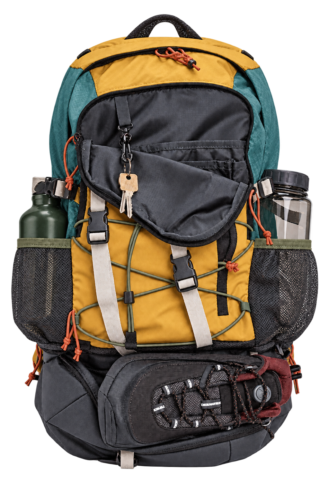
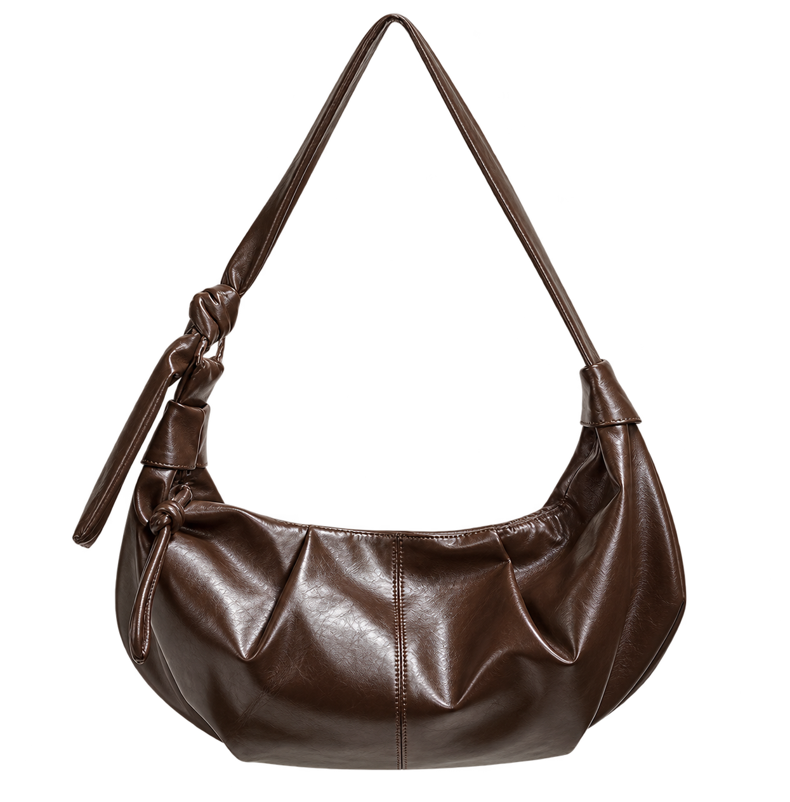
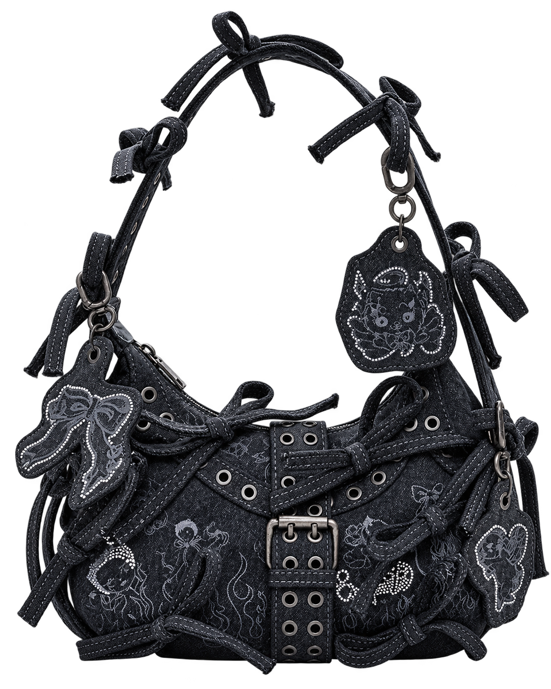
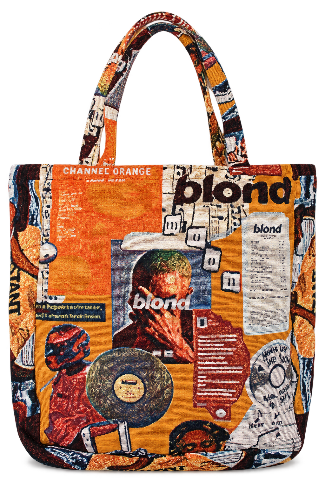
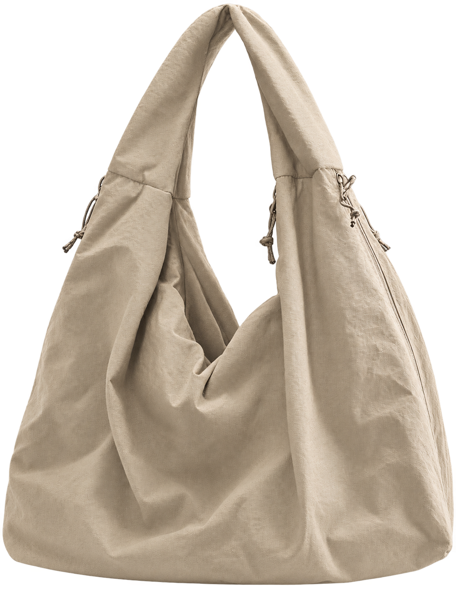
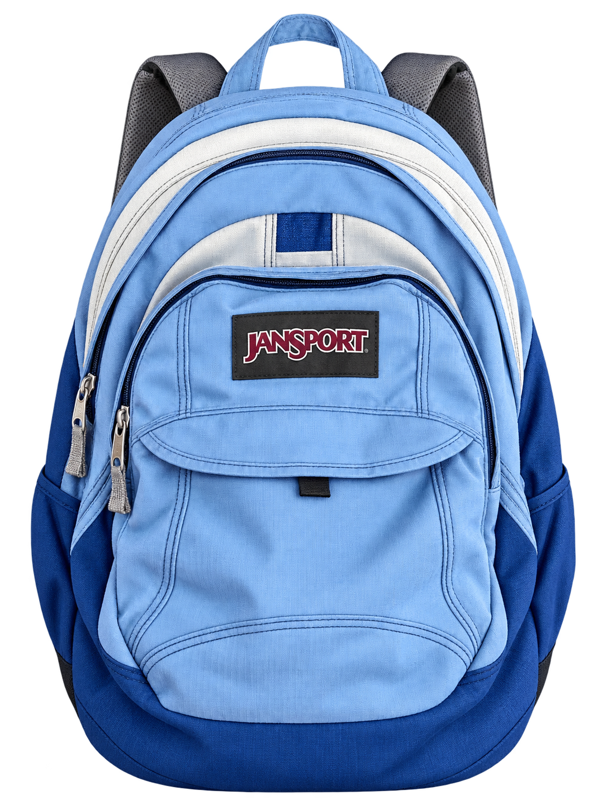

A Smaller Bag

A wallet is a bag
made more private
too small for everything
only room for what matters—
a name
a little money
cards, photographs
and old receipts
A bag carries my day
a wallet carries
the parts I keep closest
Choose a Bag
If a wallet is a bag reduced to its essentials,
perhaps the bag we choose says something
about what we carry.
Choose one. Don’t think too hard.

Ready to Go
You are practical, active,
and usually ready to go outdooes.
Being ready matters more than looking polished.

Effortlessly Put Together
You like things that feel effortless
but still carefully chosen.
Simple does not have to mean ordinary.

More Is More
You like objects with history,
personality, and plenty of detail.
Plain was never really an option.

The Open Book
Your interests arrive before you do.
You would rather be specific
than quietly fit in.

Quietly Capable
You prefer a clean exterior
with enough room for real life.
Useful can still look good.

The Familiar Favorite
You want something familiar,
reliable, and easy to carry.
It goes everywhere without asking for attention.
None of the above
Still Looking
None of these felt like yours.
Maybe your bag is still out there.
↩ put wallet back